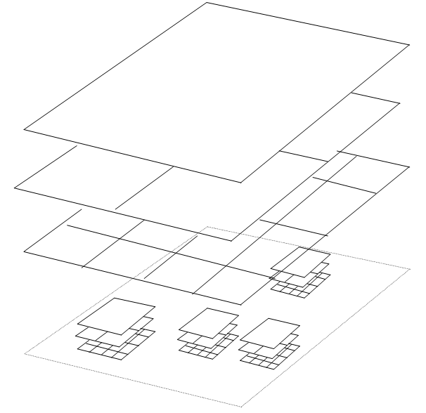

Layout of a More Complex Map
In many applications it is necessary to use Layer Stacking. A Layer Stack can be considered as a set of layers that cover the same extent. Each layer in the stack is more highly tiled, and contains more detail than the layer above it.
Layout of a simple Map simply shows the layout of a Map consisting of a single layer stack.
The diagram below shows the layout of a multiple stack map. A typical application of this would be where there is a need to have several layers containing the overview of a country, and for each town or city to have its own set of layers.


Copyright © 1998 to 2025 by Envitia Group PLC.